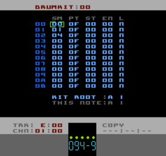

Drumkit Editor Page
Whereas Tracks A, B, C & D use Instruments, Track E uses Drumkits.
Each row of the Drumkit could be referred to as a Drum. Each Drum is a collection of values that specify a DCM sample and several parameters to describe the playback of that sample. Of course, even though the sounds are referred to as 'Drums', the samples could be any sound at all.
From left-to-right the parameters are:
|
specifies DCM sample number for the Drum sound. 00 is the first sample in the ROM, the maximum value is of course dependent on how many samples are in your ROM |
|
specifies the playback 'pitch' of the sample. This number doesn't really bear any relationship to musical pitch, it's just a value written to one of the APU registers to control the playback speed, 00 being the slowest and 0F being the fastest. Because of the relatively poor quality of the NES's DCM samples, 0F is the most useful and used setting |
|
specifies a starting offset for the sample playback of each Drum. A value of 00 plays the sample from the beginning. The valid range of this parameter depends on the sample. There are no checks in place to prevent you setting the start offset past the end of a sample. |
|
specifies an end offset for the sample plaback of each Drum. A value of 00 means the sample will play to it's natural end. Values higher than 00 will truncate the sample accordingly. Like ST the value is not checked against the length of the sample so you can specific a value that's bigger than the actual sample length. In both cases nothing drastic will happen, it will just sound odd |
|
specifies whether the sample should be one-shot (N) or looped (Y). Sample looping occurs between the start and end of the sample but it is also affected by the start (ST) and end (EN) offsets |
'KIT ROOT'
The other parameter you can set for a Drumkit is the Drumkit Root. This sets the Pattern note that will trigger the first Drum in the Drumkit. The first Drum is the one at the top of the table (00). The rest of the Drumkit is triggered by subsequent semi-tones above the Kit Root. This value is set per-Drumkit.
'THIS NOTE'
This is not an editable parameter but is displayed to let you know which Pattern note will trigger the Drum that your cursor is currently on. As you can see in the screen-grab, the Kit Root is A 1 and the cursor is on the first Drum of the Drumkit, hence THIS NOTE is shown as A 1.
Drumkit Commands
Several Commands have been reused to provide functions specifically for Drumkits (Track E). The Commands are listed here .